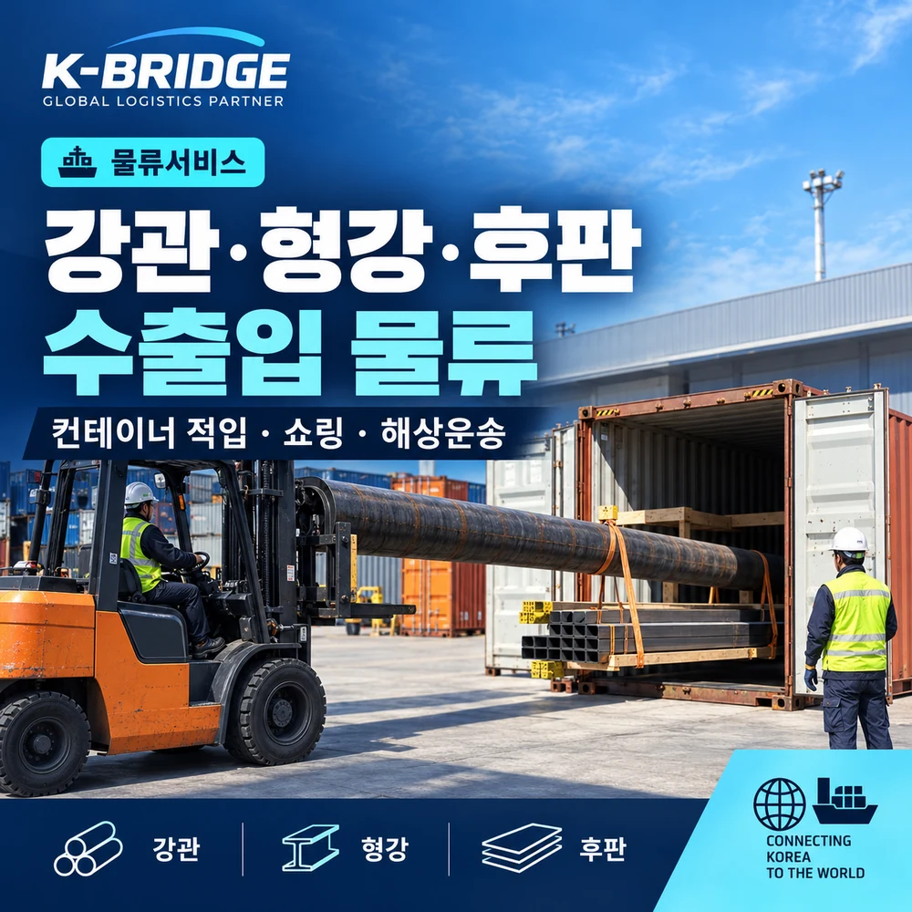
먼저 결론부터
철강재 물류는 ‘총중량’만 보는 것이 아니라 가장 긴 화물과 가장 무거운 번들을 먼저 봅니다.
강관·형강·후판은 부피보다 길이, 번들 중량, 하역 장비와 작업 공간이 운송 방식을 좌우합니다. 컨테이너에 적입할 때는 바닥 하중을 분산하고, 해상·육상 운송 중 화물이 움직이지 않도록 쇼링과 고박 조건까지 함께 설계해야 합니다.
1. 강관·형강·후판은 왜 일반 화물과 다를까요?
철강재는 밀도가 높고 길이가 길어 차량·컨테이너·하역장비·고박을 동시에 검토해야 합니다. 같은 총중량이라도 번들 하나의 중량과 길이가 달라지면 필요한 지게차와 적입 방식도 달라집니다.
강관과 형강은 장척 특성 때문에 상하차 공간과 지게차 회전 반경이 중요하고, 후판은 판당 중량과 적층 상태에 따라 받침 위치와 리프팅 포인트가 달라질 수 있습니다. 따라서 견적 단계부터 카탈로그상의 품명보다 실제 선적 상태의 치수·중량·포장 형태를 확인하는 것이 정확합니다.
| 확인 항목 | 실무상 의미 | 체크 포인트 |
|---|---|---|
| 최장 길이 | 컨테이너 적입·차량 적재·작업 공간 결정 | 포장 후 실제 길이 기준 |
| 최대 번들 중량 | 지게차·크레인 용량과 인양 방식 결정 | 총중량과 별도로 확인 |
| 단면·포장 형태 | 적층 안정성과 접촉면, 받침 위치에 영향 | 파이프·형강·후판별 형상 확인 |
| 총중량 | 차량·컨테이너 허용 범위 검토 | 장비 사양·선사·터미널 조건 확인 |
2. 실제 현장 작업은 네 단계로 나누면 이해가 쉽습니다
첨부된 작업 사진을 기준으로 보면 철강재 수출 작업은 크게 ① 하차·정렬 → ② 장척화물 핸들링 → ③ 컨테이너 적입 → ④ 쇼링·고박으로 이어집니다. 각 단계가 독립된 작업처럼 보여도 앞 단계의 배치가 뒤 단계의 작업성과 안전성에 직접 영향을 줍니다.
3. 하차·분류 — 작업 동선부터 정리합니다
장척화물은 야드에 어떻게 내려놓느냐가 이후 작업 효율을 좌우합니다. 컨테이너 적입 순서와 지게차 접근 방향을 생각하지 않고 적치하면 번들을 다시 옮겨야 하는 일이 생길 수 있습니다.
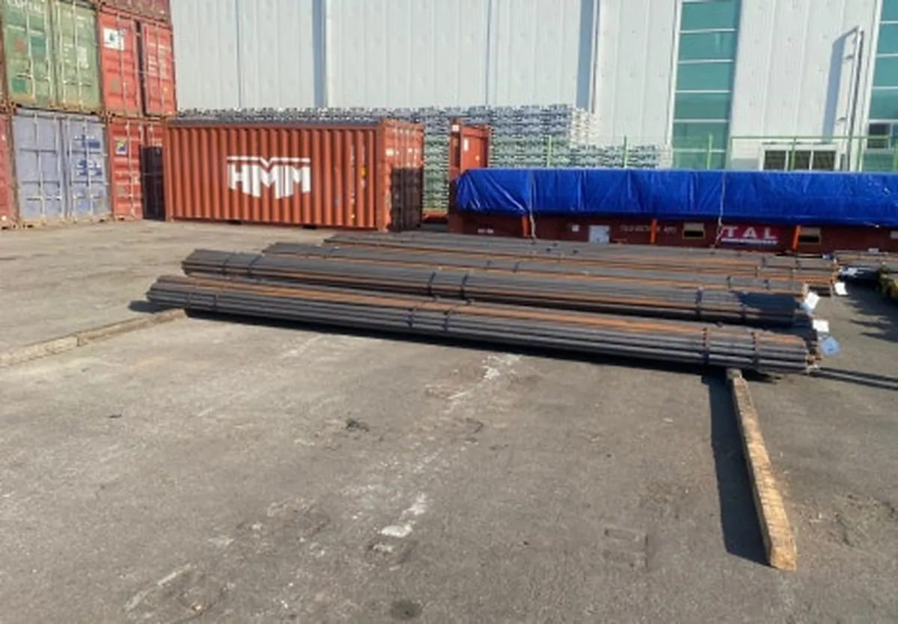
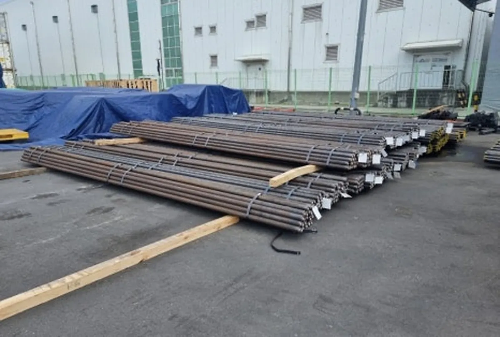
사진이 잘리지 않도록 원본 비율을 유지해 보여주며, 각 작업 장면을 한 눈에 확인할 수 있도록 정리했습니다.
4. 장척화물 핸들링 — ‘들기’보다 균형을 잡는 것이 중요합니다
길이가 긴 강관·형강류는 번들 자체가 무겁고 길어 한쪽만 들어 올리면 중심이 틀어지거나 화물이 회전할 수 있습니다. 현장에서는 화물의 길이와 강성, 중량에 따라 두 대의 지게차를 사용하거나 보조 빔·슬링을 적용하는 등 작업 방식을 조정합니다.
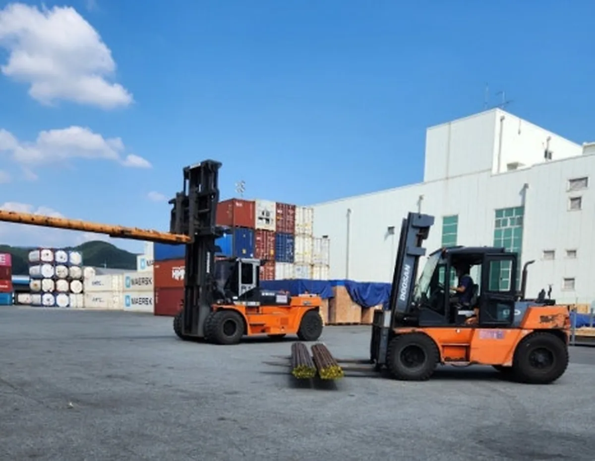
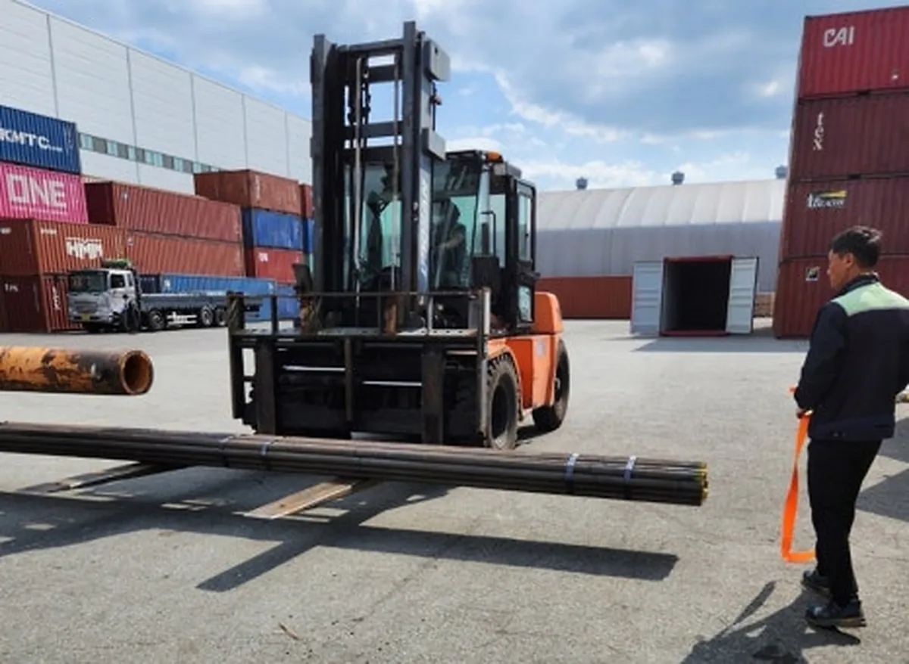
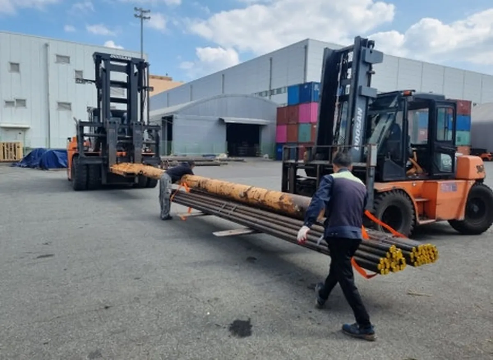
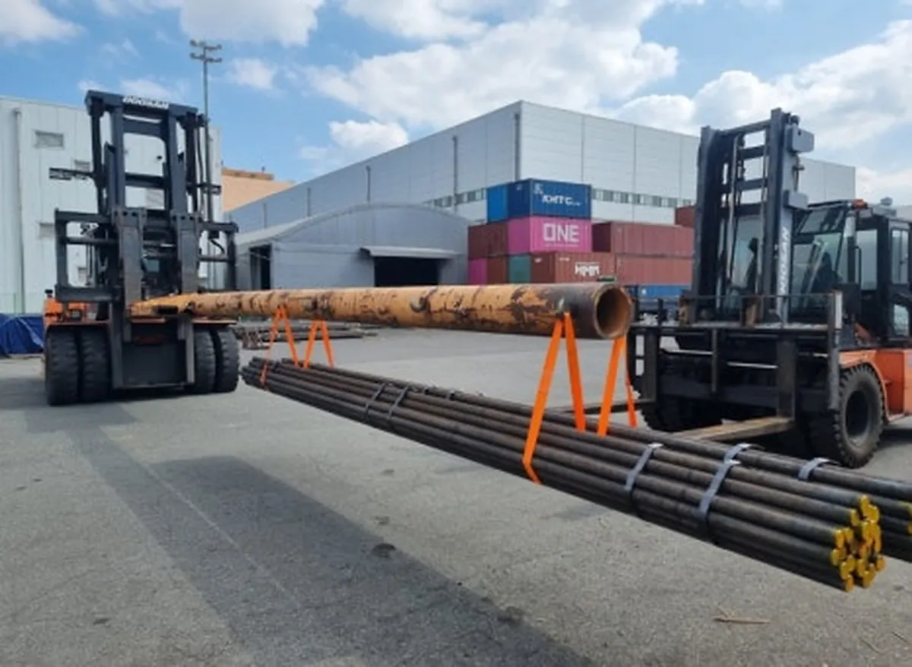
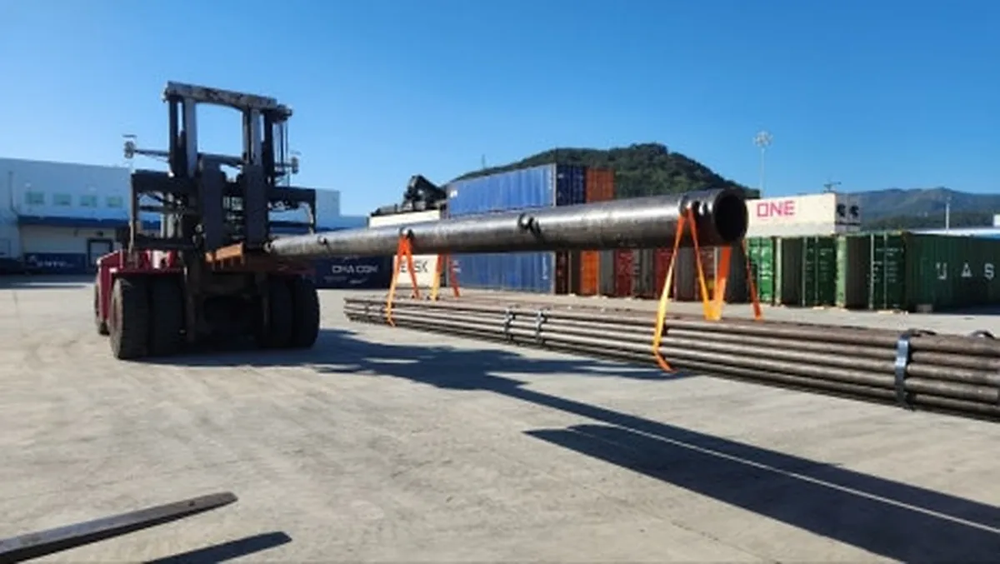
현장 주의: 사진은 실제 작업 예시이며, 지게차 대수·용량·보조장비와 인양 방식은 화물 제원과 작업장 안전 기준에 따라 별도로 확정해야 합니다.
5. 컨테이너 적입 — ‘들어가는가’보다 ‘어떻게 넣는가’를 봅니다
장척 철강재 적입은 컨테이너 도어 통과 여부, 지게차 포크 길이, 내부 받침과 하중 분산을 동시에 확인해야 합니다.
컨테이너 바닥의 한 지점에 하중이 집중되지 않도록 목재 받침(Dunnage)을 배치하고, 다음 번들을 넣을 공간과 작업 장비의 철수 동선까지 고려해 적입 순서를 잡습니다. 단순히 총중량이 허용 범위 안이라고 해서 작업이 가능한 것은 아닙니다.
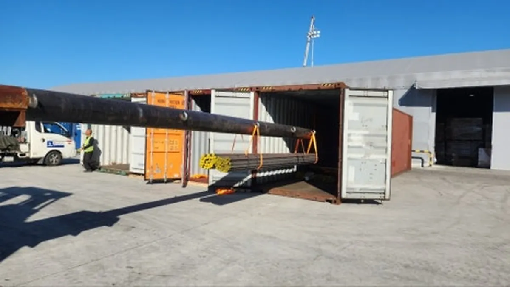
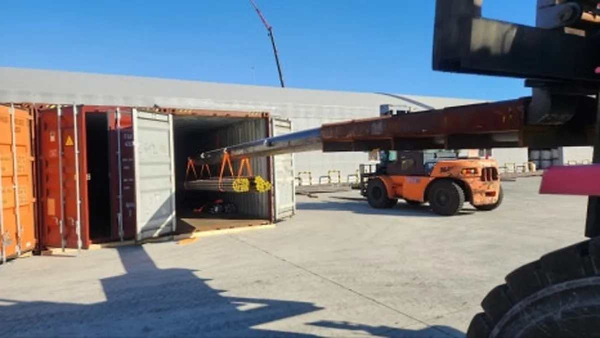
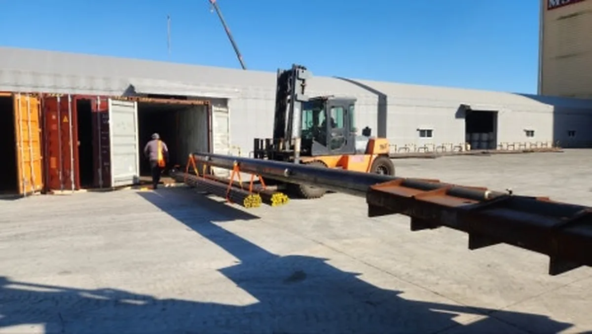
6. 쇼링·고박 — 적입이 끝난 뒤가 진짜 마무리입니다
철강재는 밀도가 높아 운송 중 작은 이동도 큰 하중으로 이어질 수 있습니다. 따라서 화물 형태와 적층 상태에 맞춰 목재 받침·블로킹·라싱 등을 적용하고, 컨테이너 문을 닫기 전에 끝단 간격, 라싱 장력, 받침 상태, 화물 이동 가능성을 최종 확인합니다.
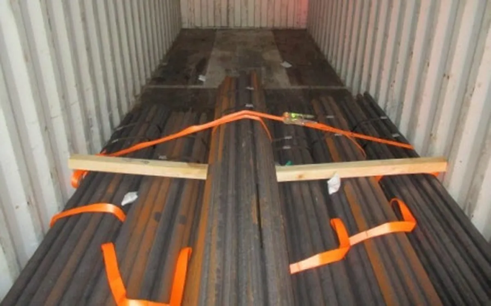
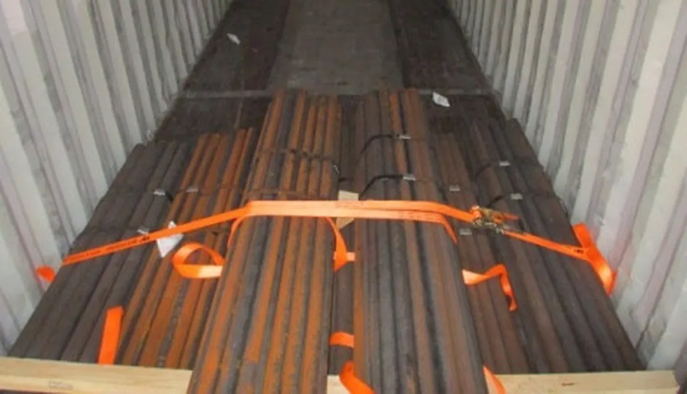
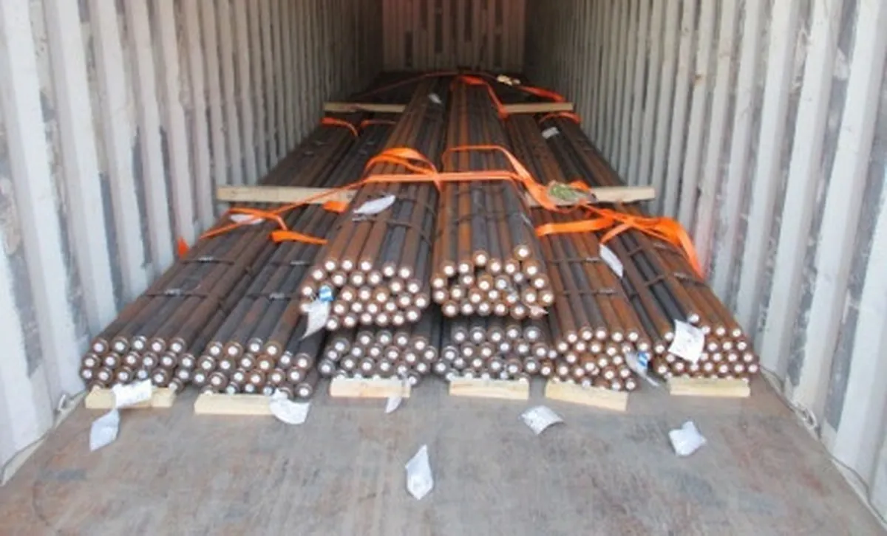
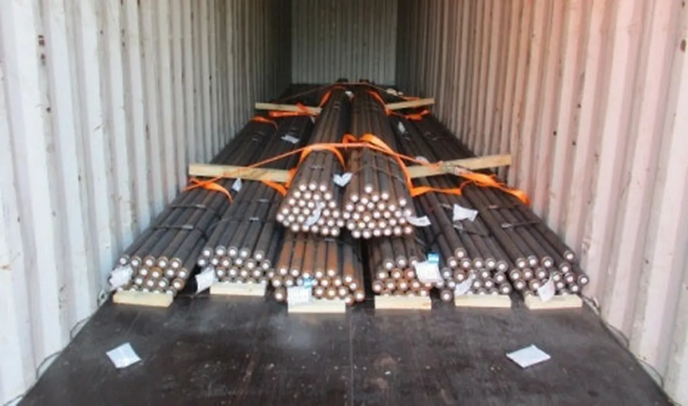
7. 화물에 따라 컨테이너와 선적 방식을 다르게 선택합니다
같은 강관이나 형강이라도 길이·중량·수량과 도착항 작업 조건에 따라 가장 효율적인 선적 방식이 달라집니다.
| 운송 방식 | 주로 검토하는 경우 | 핵심 포인트 |
|---|---|---|
| Dry Container | 도어와 내부 치수에 맞고 일반 적입이 가능한 철강재 | 번들 중량·총중량·바닥 하중·작업 장비 |
| Open Top | 상부 크레인 적입이 유리하거나 문으로 넣기 어려운 화물 | 상부 적입·OOG 여부·리프팅 계획 |
| Flat Rack | 폭·높이·작업성 때문에 일반 컨테이너 적입이 어려운 장척·중량화물 | OOG 치수·고박·선사 승인 |
| Breakbulk | 초장척·초중량 또는 대량 철강재 | 선박·부두장비·하역계획·현지 작업성 |
실무 포인트: 컨테이너별 허용 총중량과 하중 조건은 장비 사양, CSC Plate, 선사·터미널 조건을 개별 확인해야 합니다.
8. 수출과 수입은 앞뒤 순서만 다른 것이 아닙니다
수출은 적입과 선적 준비가 핵심이고, 수입은 도착 후 반출·디배닝·하역과 최종 납품 조건이 중요합니다. KBRIDGE는 해상운송만 분리해서 보지 않고 국내 작업과 통관, 선적·도착 일정을 하나의 흐름으로 관리합니다.
| 단계 | 수출 | 수입 |
|---|---|---|
| 화물정보 | 품명·재질·치수·중량·수량·사진 | Packing 정보·B/L·도착 스케줄·화물 제원 |
| 작업 설계 | 픽업차량·적입장비·컨테이너·쇼링 | 반출차량·디배닝·하역장비·납품지 |
| 통관 | 수출신고·Invoice·Packing List | 수입신고·품목분류·세율·수입요건 |
| 현장 작업 | 픽업 → 적입 → 고박 → 터미널 반입 | 터미널 반출 → 디배닝/하역 → 국내운송 |
| 국제운송 | 선사 부킹, Cut-off, B/L, 스케줄, ETA와 도착 일정 관리 | |
9. 견적 요청 전에 이 정보만 준비해도 진행이 빨라집니다
KBRIDGE 철강재 수출입 지원 범위
- 화물 제원에 맞춘 차량·컨테이너·선적 방식 검토
- 지게차·크레인 등 현장 작업장비와 적입 일정 연결
- 컨테이너 적입 순서, 받침·하중 분산, 쇼링·고박 작업 연계
- 수출입 통관 서류 흐름과 해상운송 선사 부킹 관리
- 도착 후 반출·디배닝·국내운송 및 최종 납품 일정 검토
KEY TAKEAWAYS
이 글에서 기억할 것
- 화물 제원 최장 길이 · 번들 중량 · 총중량
- 작업 장비 지게차 능력 · 포크 간격 · 작업 공간
- 컨테이너 적입 도어 통과 · 적입 순서 · 하중 분산
- 쇼링·고박 Dunnage · Blocking · Lashing
10. 자주 묻는 질문
Q. 강관이나 형강은 무조건 20FT 컨테이너로 선적하나요?
Q. 장척 철강재 견적을 받을 때 어떤 정보가 가장 중요한가요?
Q. 컨테이너 내부 쇼링과 고박은 왜 필요한가요?
Q. 수입 철강재도 하역과 국내운송까지 연결할 수 있나요?
강관·형강·후판, 제원과 현장 사진부터 보내주세요
가장 긴 화물, 가장 무거운 번들, 총중량, 상차지와 목적지를 확인하면 차량·컨테이너·작업장비·적입·쇼링과 해상운송까지 한 번에 검토합니다.